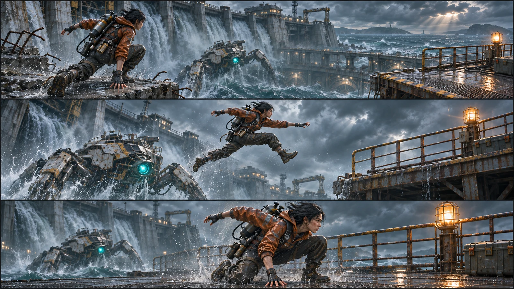
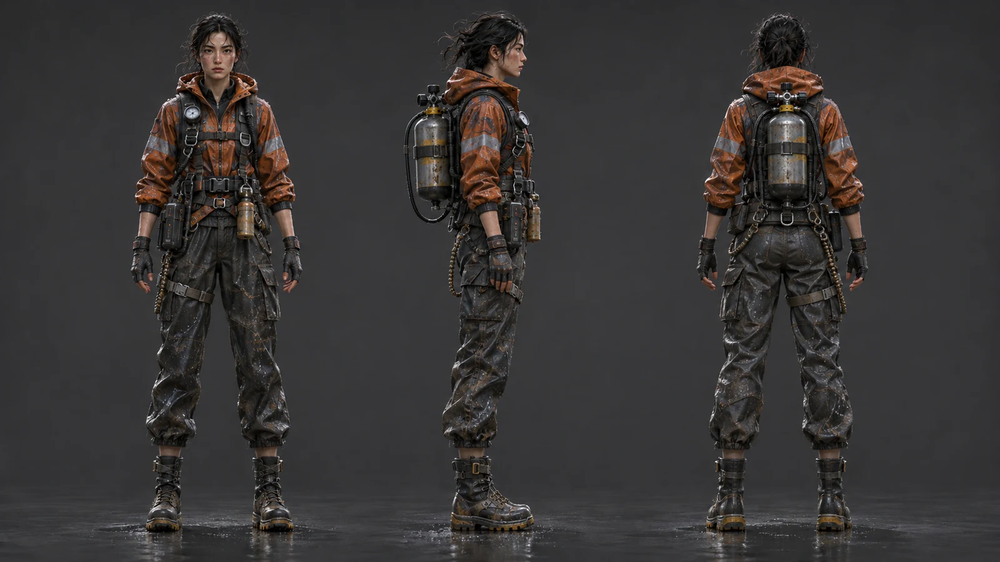
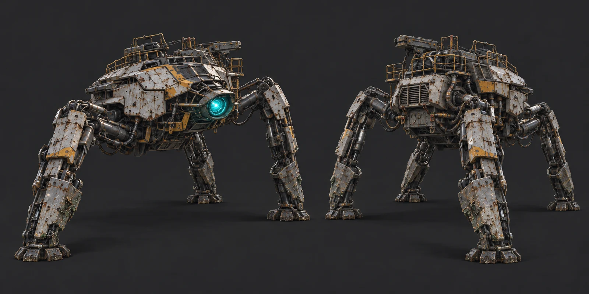
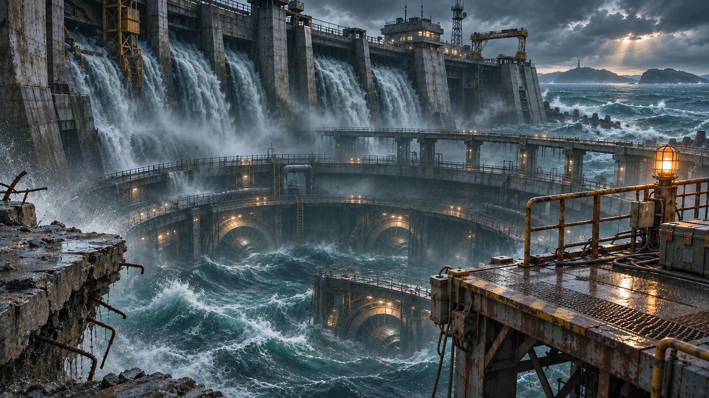

AI短片 · 游戏 CG 动态分镜
心动进行时 · 人像创意海报
原创游戏概念 · AI 视觉与动态分镜
10 秒动态分镜
用静帧剪辑、模拟运镜和合成音效预演动作节奏。打捞员从断墙起跳，越过破水而出的检修机，最后落到维修平台。
战斗关键帧

三镜头分镜

- 断墙蓄力 · 交代起跳点和右侧落点。
- 半空交错 · 检修机从潮水里抬升，打捞员保持从左向右的运动方向。
- 平台落地 · 主角低身缓冲，右侧暖灯确认落点。
角色、机械与场景设定


